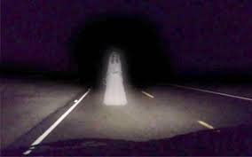

Es una leyenda parecida a la anterior, y también está extendida por todo el mundo.
En ella, una mujer vestida de blanco aparece durante un breve periodo de tiempo en alguna zona rural. Su historia suele estar relacionada con alguna tragedia de carácter local. Son mujeres que han perdido a hijos, maridos o han sido víctimas de una traición y su espíritu vaga sin descanso clamando venganza.
En el medievo, cuando esta fantasmagórica figura aparecía significaba que alguien cercano, de la familia o del vecindario, iba a morir. En la tradición inglesa, la Dama de Blanco custodiaba un tesoro, pero murió repentinamente, antes de que pudiera revelarle a nadie dónde se hallaba escondido.
Cuentan que en el siglo XIX la dama blanca se apareció hasta tres veces al hijo de los dueños del castillo de Blenkinsopp en Northumbria, pero es cierto que en esa parte de Inglaterra todos los castillos tienen sus leyendas de fantasmas. La dama Blanca en Gales también guarda un tesoro.
Cuando un hombre tuvo el valor de acercarse a ella, le recompensó con la mitad. En su avaricia, él se lo llevó todo, pero la Dama de Blanco reaccionó, y con sus poderes sobrenaturales, mató al codicioso abusón.En la capital madrileña también hay una dama de blanco que, noctámbula y sin asomo de vértigo, se pasea de noche por el techo de la casa de las Siete Chimeneas en la Plaza del Rey.
Se trata de Elena, hija de un montero de Felipe II y supuesta amante del rey que pereció en extrañas circunstancias y que, según varios testigos, sigue deambulando por la villa y corte. Pero por las alturas.